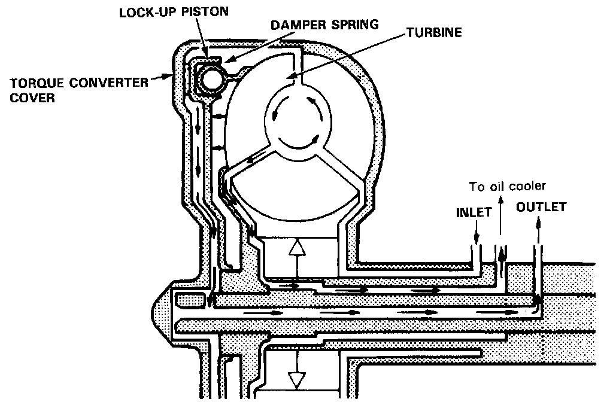
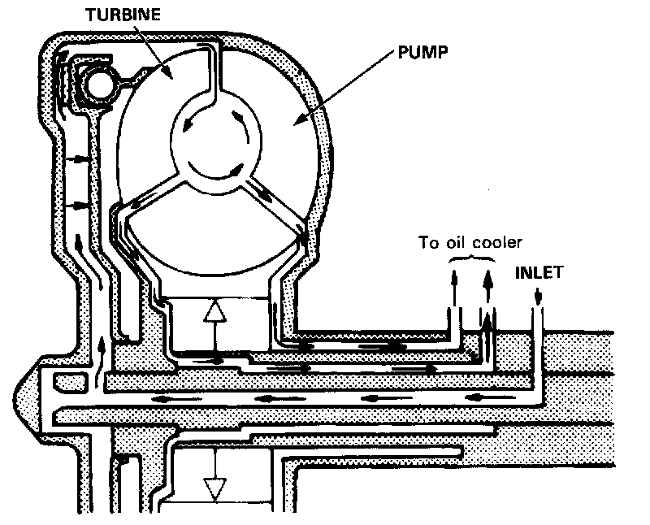
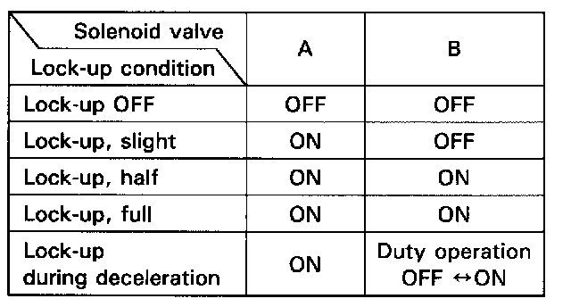
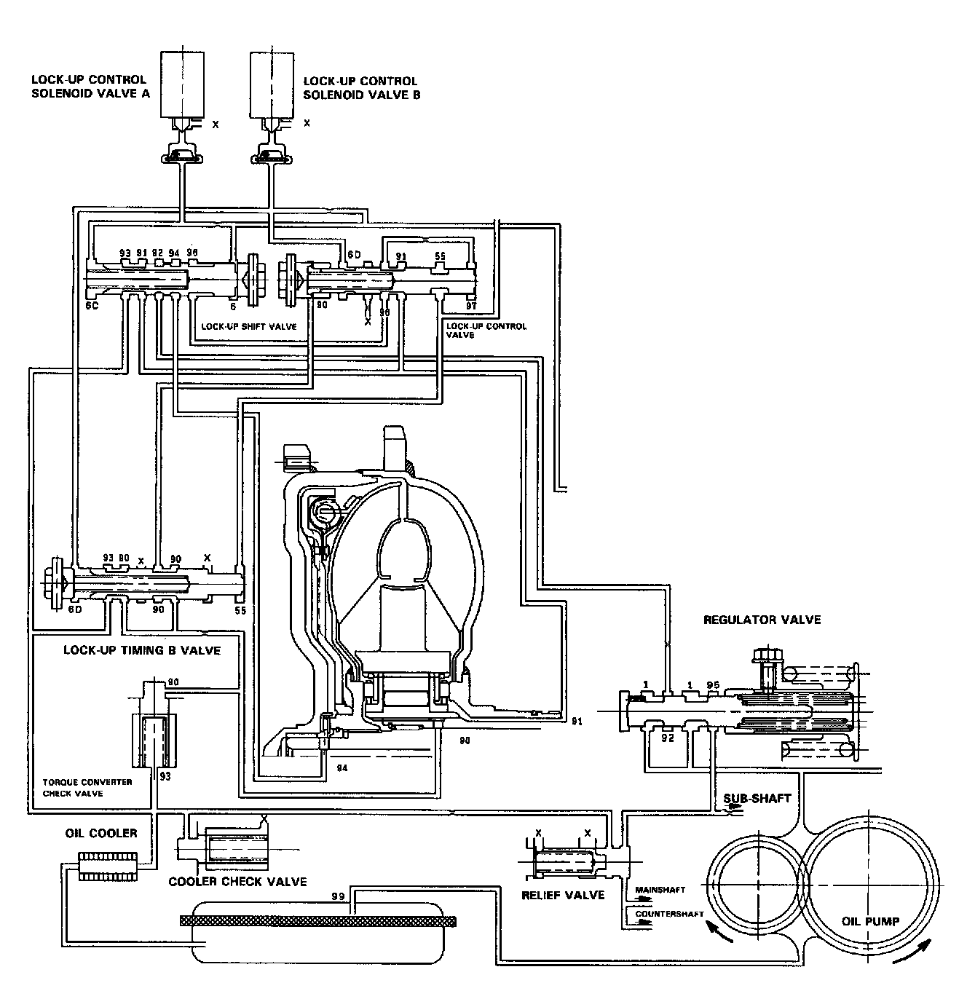

Operation
LOCK-UP CLUTCH1. Operation (clutch on)

With the lock-up clutch on, the oil in the chamber between the torque converter cover and lock-up piston is discharged, and the converter oil exerts pressure through the piston against the converter cover. As a result, the converter turbine is locked on the converter cover firmly. The effect is to bypass the converter, thereby placing the car in direct drive.
POWER FLOW
The power flows by way of:
- Engine
- Drive plate
- Torque converter cover
- Lock-up piston
- Damper spring
- Turbine
- Mainshaft
2. Operation (clutch off)

With the lock-up clutch off, the oil flows in the reverse of CLUTCH ON. As a result, the lock-up piston is moved away from the converter cover; that is, the torque converter lock-up is released.
POWER FLOW
The power flows by way of:
- Engine
- Drive plate
- Torque converter cover
- Pump
- Turbine
- Mainshaft
In [D4] position in 2nd, 3rd and 4th, and [D3] position in 3rd, pressurized fluid is drained from the back of the torque converter through an oil passage, causing the lock-up piston to be held against the torque converter cover. As this takes place, the mainshaft rotates at the same speed as the engine crankshaft. Together with hydraulic control, the TCM optimized the timing of the lock-up system. Under certain conditions, the lock-up clutch is applied during deceleration, in 3rd and 4th speed.

The lock-up system controls the range of lock-up according to lock-up control solenoid valves A and B, and throttle valve B.

When lock-up control solenoid valves A and B activate, modulator pressure changes. Lock-up control solenoid valves A and B are mounted on the torque converter housing, and are controlled by the TCM.